Project 1: Images of the Russian Empire
Colorizing the Prokudin-Gorskii photo collection
Overview
The goal of this project is to colorize the Prokudin-Gorskii photo collection from 3 single digitized glass plates taken through red, green, and blue filters which we want to align. In the first part of the project, I solved this image alignment using a simple euclidean distance metric, that searches within a window of 15 pixels to find the best transformation with the lowest loss. Trying this method on the jpeg images, I found that it worked well for cathedral, but not as well for the other two images (monastery, tolbolsk). Therefore, I normalized the images and applied cropping to remove 10% on each border, which improved results for all three images. Here is an example of the before and after of the monastery image:
Displacement (old): Green (-6, 0), Red (9, 1)

Displacement (NCC): Green (-3, 2), Red (3, 2)
Later on, I applied this method to the large .tif images with improvements such as using normalized cross-correlation (NCC) as the alignment metric and using image gradients to find better features for alignment. I also implemented a coarse-to-fine recursive search using an image pyramid to make the alignment computationally feasible for the large image, which I describe further below.
Coarse-to-Fine Image Pyramid
While the single-scale alignment worked for the smaller .jpg files, it was not computationally feasible for the large, high-resolution .tif images. To solve this, I implemented a coarse-to-fine search using an image pyramid. This approach works by recursively downscaling the images to a manageable size (maximum side should be < 1000). Then, we perform a coarse alignment on the lowest-resolution version which gives us a good estimate which is our base case. I then refine that alignment on a much smaller search window (4x4 pixels) on each higher level of the pyramid until we reach the original resolution.
The process for aligning with the pyramid is as follows:
- The `align_pyramid` function checks if the image is small enough. If so, it uses the simple `align` function as a base case.
- If the image is large, it's downscaled, and the function calls itself recursively on the smaller images.
- The coarse displacement from the lowest-resolution alignment is scaled back up to the next level of the pyramid.
- A final, fine-tuned search is performed on the higher-resolution images, but within a much smaller search window around the scaled-up initial guess to improve efficiency.
This method significantly reduces the search space and makes the alignment of the larger .tif files both accurate and maneageable. I switched to using NCC loss instead of eucliden distance because I had better results with it. This pyramid approach yielded good results for most images, but I still found that some images with large differences in brightness between the RGB channels had poor alignments, which is why I changed to a gradient-based metric described below.
For instance, the emir image below shows some of the issues with usuing a raw pixel intensity metric:
Emir (L2)
Emir (NCC + gradient)
Gradient-based Features
Gradient-based Alignment: One bells-and-whistles feature I implemented was to use gradients to find better features for alignment. This method focuses on edges and high-frequency details, which are often more reliable for matching than overall image intensity, especially if the image has largely differeing RGB channel intensities. I used the numpy.gradient() function to compute this on a 2 dimensional array, which returns the gradient in both x and y directions.
Moreover, I tuned my parameters within my image pyramid to find the best values that worked with all images. The base case has a window search size of 100x100 pixels, and we crop 20% of the image on all sides. On each recursive pass, I decreased the search space to 4x4 pixels wide (2 pixels in each direction) and increased the intensity of the cropping to 30%. The displacement values in the results below are from these parameters with the changes mentioned above applied.
Results: All Example Images
cathedral

Green displacement: (5, 2)
Red displacement: (12, 3)
monastery

Green displacement: (-3, 2)
Red displacement: (3, 2)
tobolsk

Green displacement: (3, 3)
Red displacement: (7, 3)
church
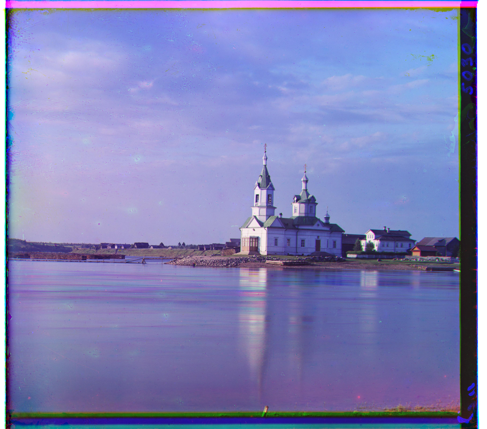
Green displacement: (26, 1)
Red displacement: (58, -5)
emir
Green displacement: (49, 23)
Red displacement: (107, 40)
harvesters
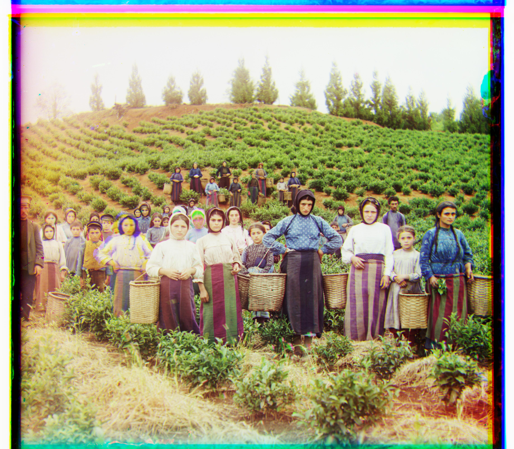
Green displacement: (60, 16)
Red displacement: (124, 14)
icon
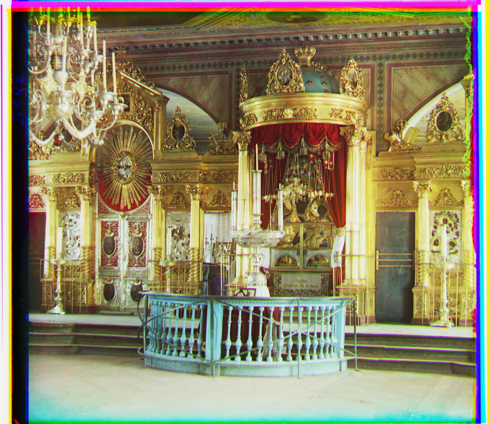
Green displacement: (36, 18)
Red displacement: (89, 23)
italil
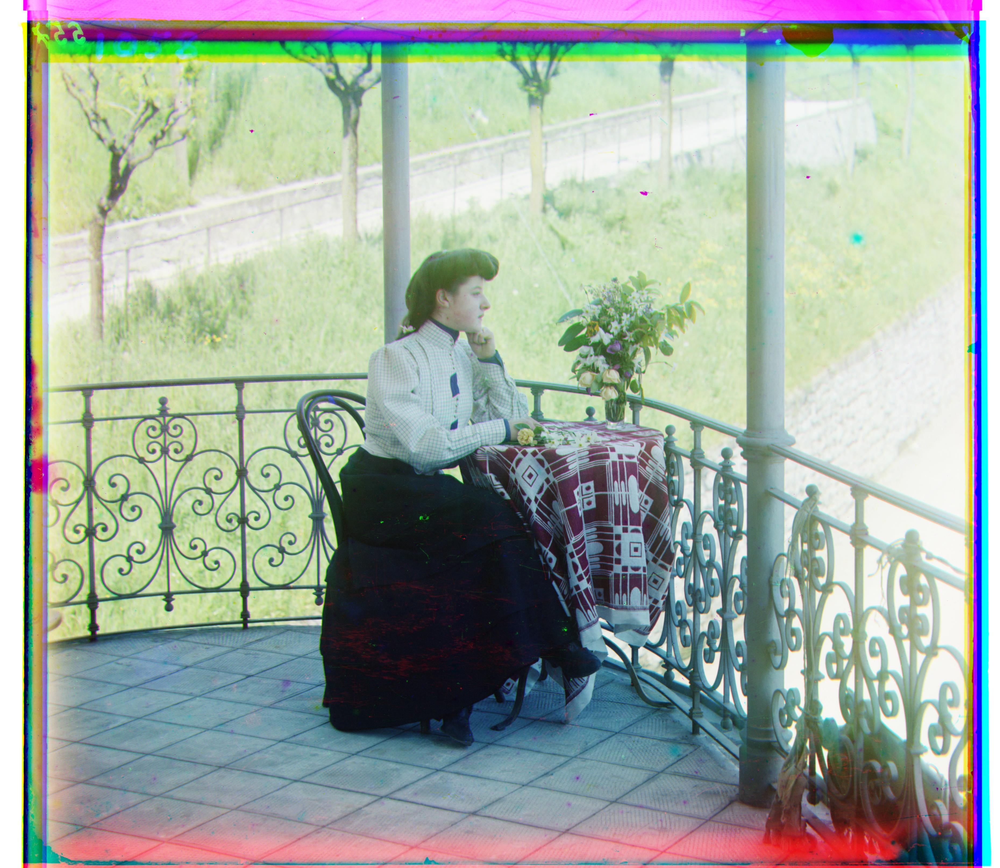
Green displacement: (39, 22)
Red displacement: (76, 36)
lastochikino

Green displacement: (-3, -2)
Red displacement: (76, -8)
lugano
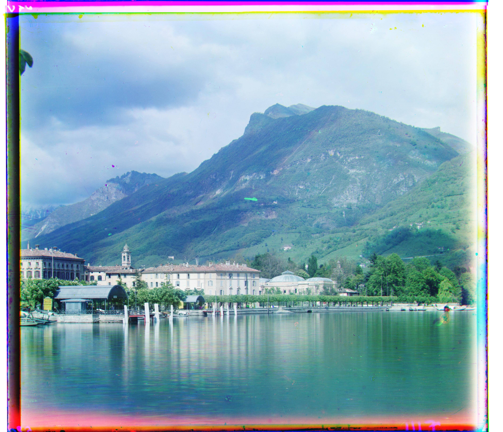
Green displacement: (41, -17)
Red displacement: (93, -29)
melons
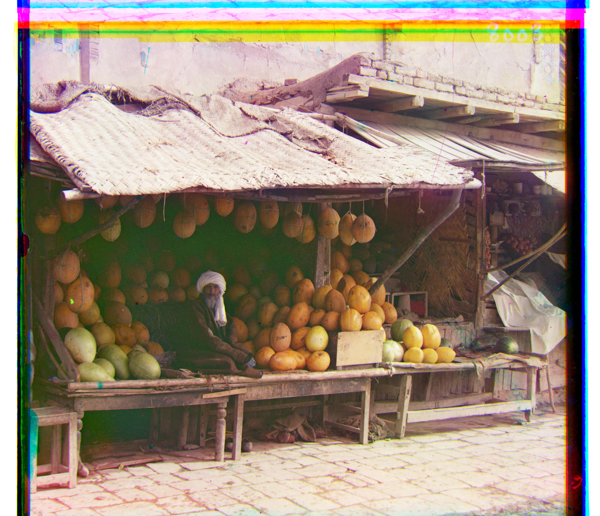
Green displacement: (82, 9)
Red displacement: (179, 13)
self portrait
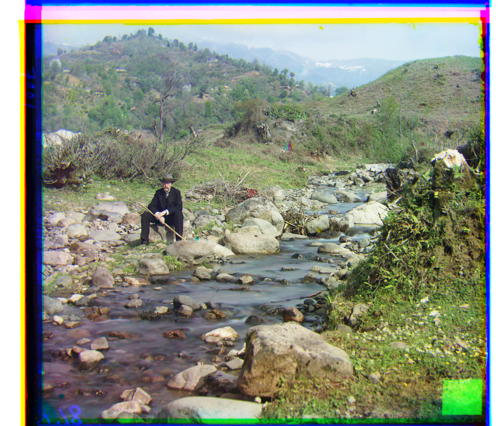
Green displacement: (78, 29)
Red displacement: (176, 36)
siren
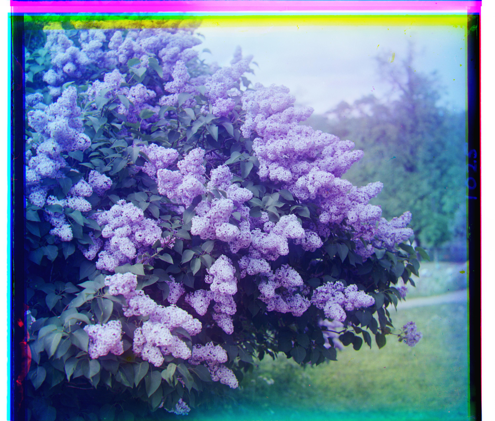
Green displacement: (48, -5)
Red displacement: (97, -24)
three generations
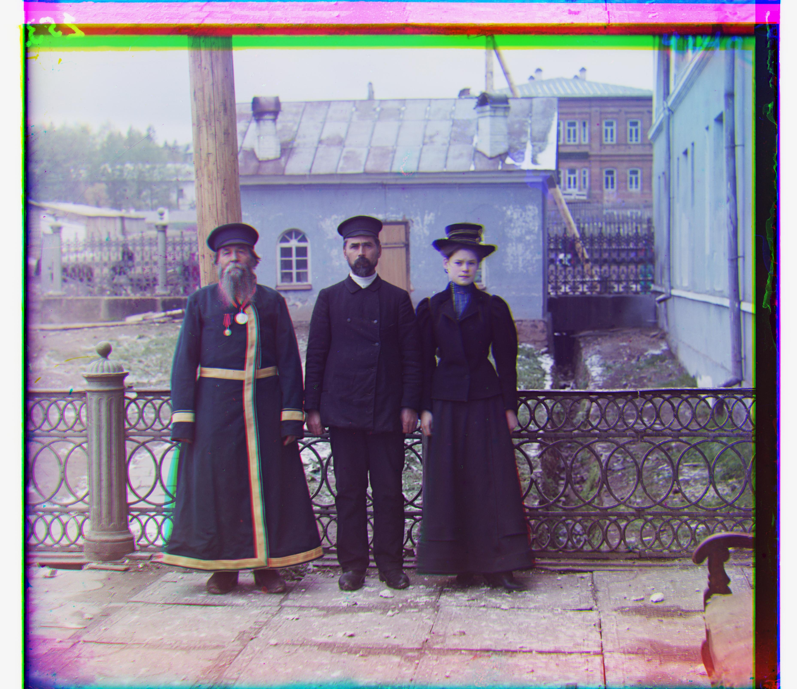
Green displacement: (51, 14)
Red displacement: (111, 9)
Results: Custom Images
napoleon
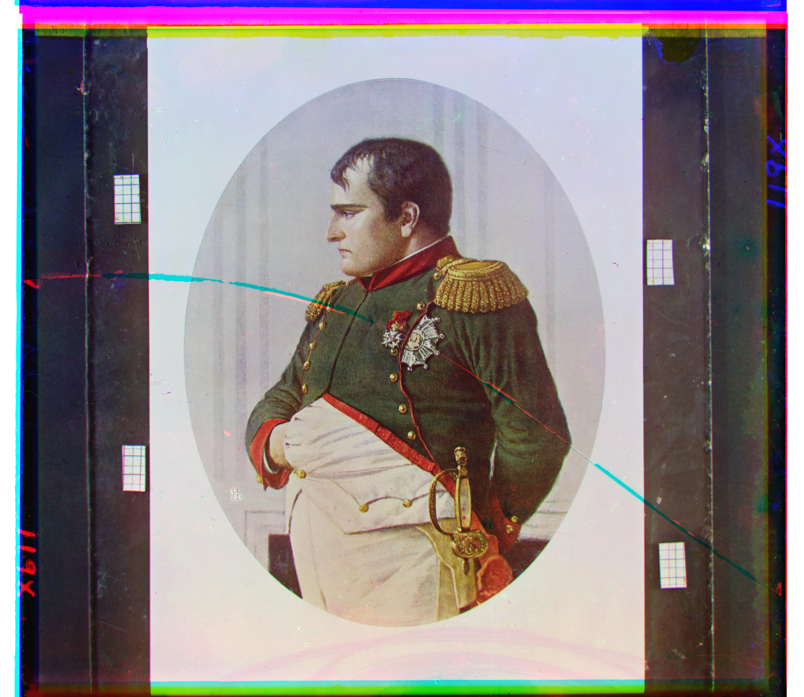
Green displacement: (63, 5)
Red displacement: (133, -2)
v malorossii
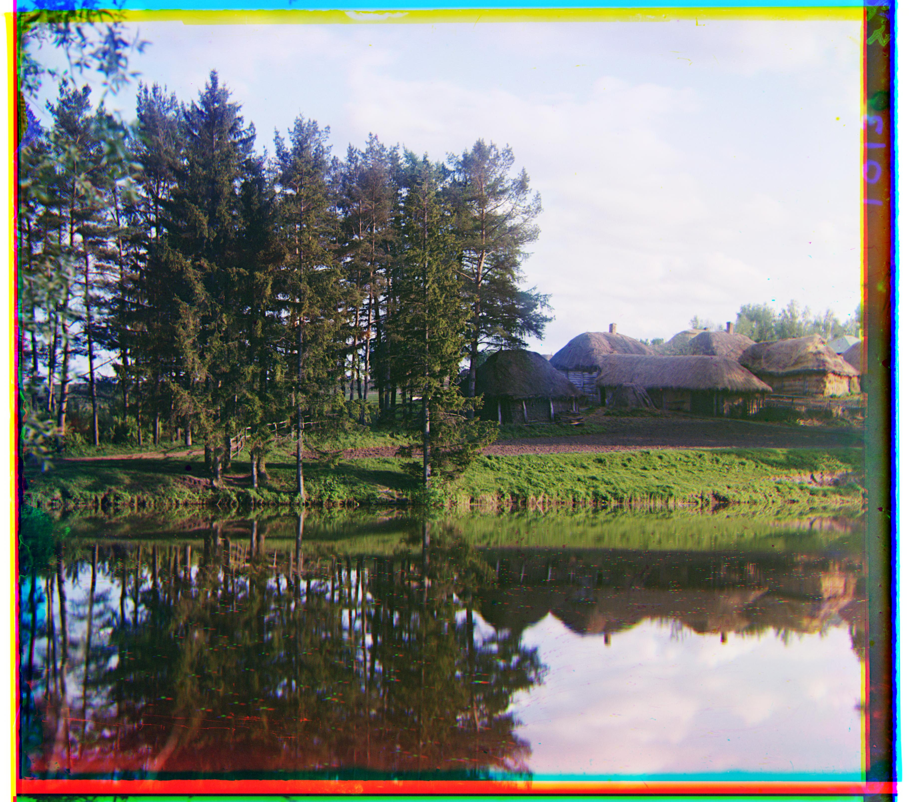
Green displacement: (-23, 9)
Red displacement: (-34, 12)
v oranzhereie
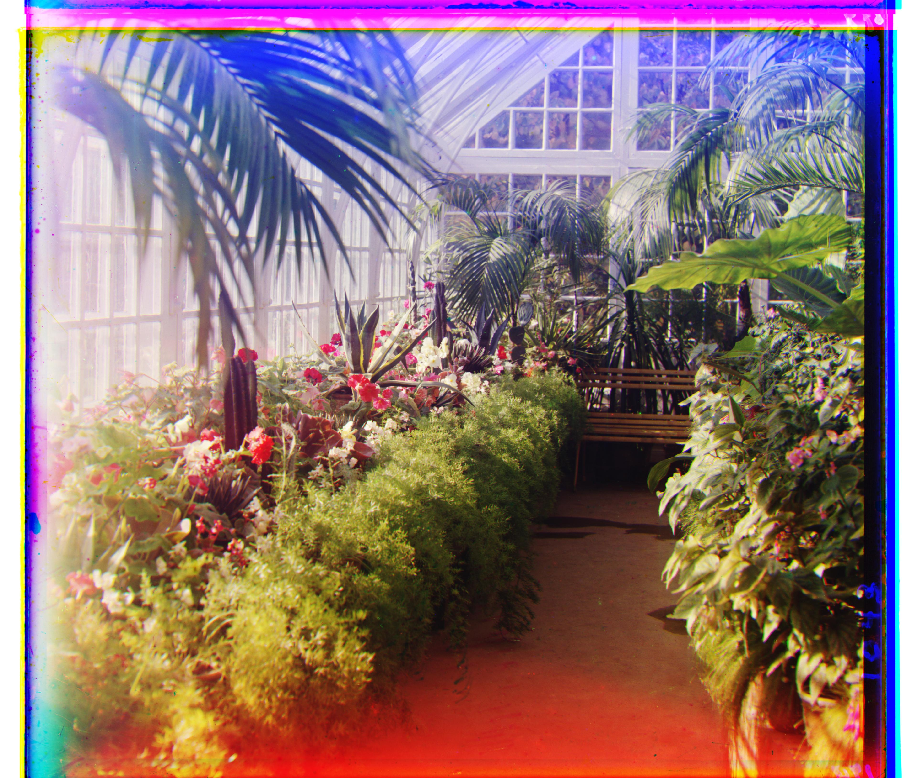
Green displacement: (59, 27)
Red displacement: (126, 34)
Conclusion
By combining a robust alignment algorithm with a coarse-to-fine image pyramid, and enhancing the metric with NCC and gradient features, I was able to successfully colorize all the images from the Prokudin-Gorskii collection, aligning red and green glass plate negatives to the blue plate.